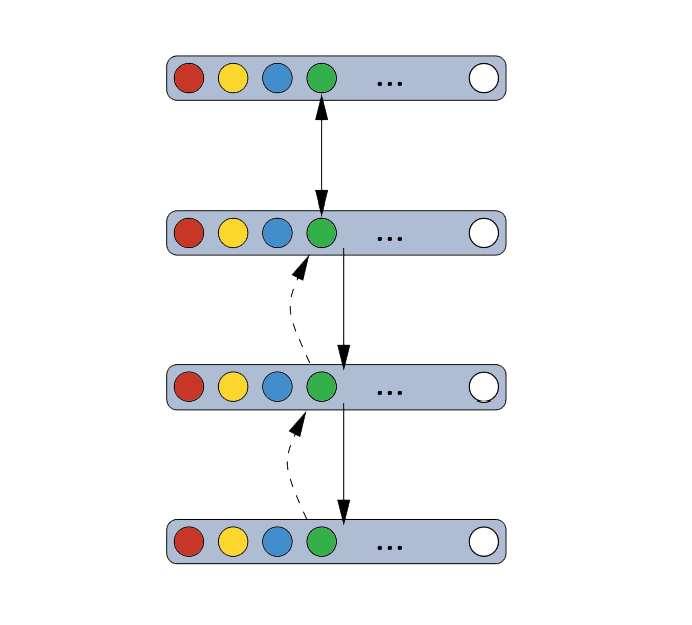

Table of Contents
Greedy Layer Wise Learning
What is greedy layer-wise training?
The greedy layer-wise training is a pre-training algorithm that aims to train each layer of a DBN in a sequential way, feeding lower layers’ results to the upper layers. This renders a better optimization of a network than traditional training algorithms, i.e. training method using stochastic gradient descent à la RBMs.
In terms of computational units, deep structures such as the DBN can be much more efficient (25) than their shallow counterparts since they require fewer units (23) for performing the same function. Multi-layer deep structures can represent abstract concepts and varying functions by keeping many non-linear layers in a hierarchy (25). From a lower-level to a higher-level in this hierarchy, layers’ abstractness ascend in terms of the complexity of objects they are representing (in the illustration below, the top layer shows all elemental pixels whereas the images are kept in the bottom layer). The process of how we divide more complex objects into simpler objects is by modeling a set of joint distribution between each visible and hidden layer.

Greedy Layer Wise Learning
Why Do We Need Greedy Layer-Wise Training?
However, training a deep structure can be difficult since there may exist high dependencies across layers’ parameters (22), i.e. the relation between parts of pictures and pixels. To resolve this problem, it is suggested that we must do two things. The first step is adapting lower layers to feed good input to the upper layers’ final setting (the harder part). Next we need to adjust upper layers to make use of that end setting of upper layers (22).
Greedy layer-wise training has been introduced just to tackle this issue. It can be used for training the DBN in a layer-wise sequence where each layer is composed of an RBM, and it is confirmed to bring a better generalization by initializing a local minimum (or local criterion) that helps to formulate a representation of high-level abstractions of the input to the network (25).
Amongst the greedy layer-wise training subset (excluding semi-supervised training which adapts parts of the objectives of both supervised and unsupervised training), unsupervised layer-wise training generally performs better than the supervised layer-wise training. This is because the supervised method may be, so to speak, “too greedy” and discard some useful information in the hidden layers (25). In this report, we choose to examine unsupervised greedy layer-wise training algorithm.
{kind=link}
Greedy Layer Wise Learning
How does it work?
A DBN is a stack of RBMs is trained in a greedy and sequential manner to capture the representation of hierarchy of relationships within the training data. A model of distribution between observed vector \(x\) and \(l\) hidden layer \(h_{k}\) is as follows)(21):
where the distribution for visible units conditioned on hidden units of a RBM block at level k is represented by\(P(h^{k-1}|h^{k})\), and the visible-hidden joint distribution of top-level RBMs is represented by \(P(h^{l -1},h^{l} )\)(21).

In an unsupervised training, a layer learns a more abstract representation of the layers below it and no label is require in the process since the training criterion does not depend on labels (25). The algorithm of greedy layer-wise unsupervised training for a DBN can be generalized as following (21):
- Let raw input x be the first RBM layer that we want to train, \(x = h(0)\).
- Use the resulting representation from the first layer as an input data to the second layer. This representation can either mean activation data \(p(h^{(1)} =1|h^{(0)})\) (23) or a set of samples of\(p(h^{(1)}|h^{(0)})\) (24).
- Then we train the second layer as a RBM and we keep the mean activations or sample from first layer as training data of the visible layer in this RBM.
- We repeat step 2 and step 3 for desired number of layers and for each iteration we feed upwards either the mean activations or the samples.
- Finally, we adapt fine-tuning on all parameters of the unsupervised network to transform it into classifiers by adding an extra logistic regression classifier and training by gradient descent on a supervised training criterion (24).
Greedy Layer Wise Learning
Conclusions
The advantage of unsupervised training procedure is that it allows us to use all of our data in the process of training (shared lower-level representation) and it does not require training criterion to be labeled (unsupervised). This unsupervised training process provides an optimal start for supervised training as well as to restrict the range of parameters for further supervised training (22).
Logistic Regression
What is it?
"Logistic regression is a statistical method used to analyse a dataset."
All the variables in the dataset are independent except for one. This dependent variable is categorical and discrete(26). There are two cases of logistic regression, binary dependent variables and multinomial logistic regression. The former, as its name suggests, can only have two dependent variables. The later can have more than two. However, they both use logistic functions to estimate the probabilities of the dependent variables. We will now break the two types of logistic regression down.
Logistic Regression
Binary dependent variables(27)
Logistic regression with binary dependent variables is relatively simple and commonly used. The two values are polar opposites, an example being “pass” and “fail”. Since the dependent variable is binary in nature, the conditional distribution is a Bernoulli distribution, which is a special instance of a binomial distribution.
In the Bernoulli distribution, the random variable, \(k \in {0,1}\) , has the success probability of /(p/) and the failure probability of /(q = 1-p/). Due to the fact that both /(p/) and /(q/) are within /((0,1)/), the predicted value of the regression must be restricted to /((0,1)/). To do this, the logistic distribution function is used. A logistic function is an S-shaped function which is defined as:
Where t is a linear function and can be expressed as:
Thus, we can say the logistic function is:
By establishing this, we can now compress the data set to \((0,1)\), so \(F(x)\) can be explained as probability. Therefore, we know the probability of the success occurs given a predictor x.
Logistic Regression
Multinomial logistic regression(28)
Sometimes the dependent variable has more than two values. Take for example, a simple problem defined as: “which smartphone does a person have, given some of the person’s characteristics”. The value is clearly note binary and is discrete. In this case, the logistic function will not work since it can only shift between 0 and 1. Thus we need a new technique. Fortunately, the dataset is independent so that each explanatory variable will not affect the others. Therefore, it becomes possible to construct a score which is defined as following:
\( score(\textbf X_{i}, k) \) indicates the score that the outcome k has, under the situation \(\textbf X_{i}\). \(\beta_{k}\) is the weight vector corresponding to k and is linear combined with \(\textbf X_{i}\). More specifically, both \(\beta\) and \(\textbf X\) is a vector that group the regression coefficients or explanatory variables. Thus the score function can be broken into the following:
With this equation, we are able to break the multinomial logistic regression down into several independent binary regression. We can set an arbitrary outcome as a pivot and have \(k-1\) binary regression with other outcomes against the pivot. If we choose \(K\) as the pivot, we will have:
By getting rid of the natural log, we have:
If we add \(Pr(Y_{i} = K) = Pr(Y_{i} = K)\) to the end, the LHS will sum up to 1. Thus we have:
By doing this, we figure out the probability of outcome K will occur.
With some transformation, we establish
We can now define a softmax function. A softmax function is a “generalization of logistic regression to the case where we want to handle multiple classes(29).”
The softmax function behaves similarly to the logistical function in binary logistic regression. When \(X_{k}\) is smaller than the max value it will return a value very close to 0, and when it is the max value it will return a number close to 1.
Logistic Regression
MNIST digits classification
When classifying MNIST digits, it is clear that the dependent variable has 10 values \({0..9}\). Therefore, multinomial logistic regression is used. Assume the weight matrix is \(W\) and the bias value, which is used to reduce the error, is \(b\), we have the function:
This describes the probability of the input vector x is a member of a class i. In this particular case, the x will be a 28*28 image and i will be a digit between 0 and 9.